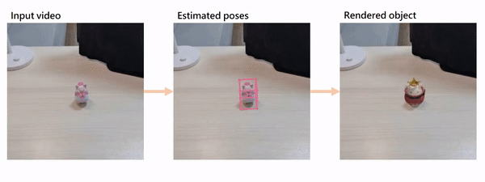
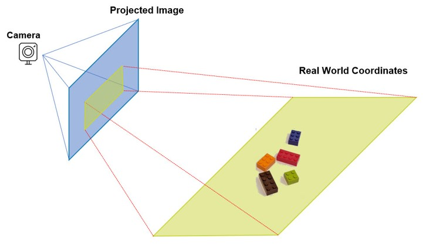
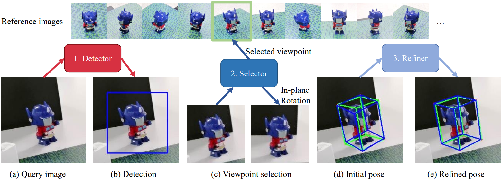
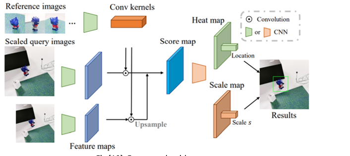
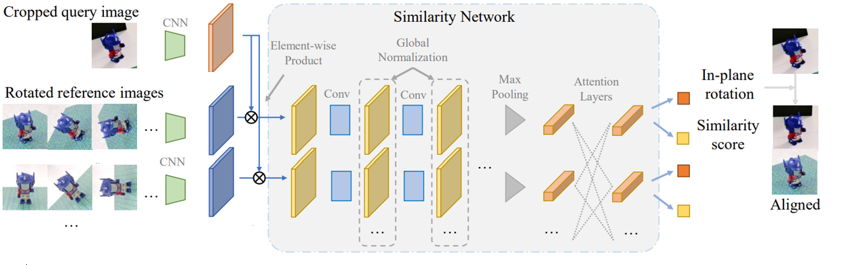
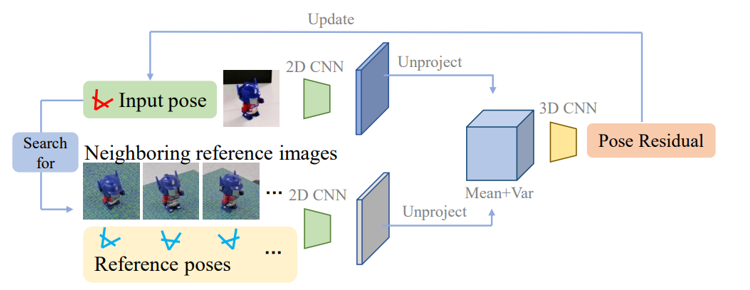
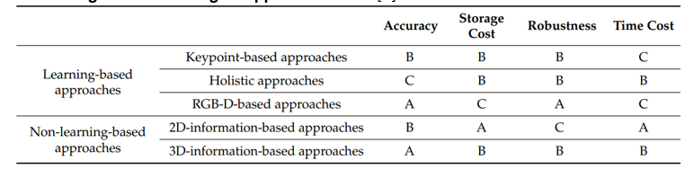

6D Pose Estimation Overview and deep dive into Gen6D
But What is a 6D Pose?
A 6D Pose is the specificnumber of axes that a rigid body is able to freely move in three-dimensional space. So it describes the physical boundaries and the orientation of a real object for the computer.

In this picture you can see where the 6 comes from. The "D" stands here for "Degrees of Freedom" and it means every dimension an object can turn itself around. There exist 6 Dimensions
- forward/backward - surge
- up/down - heave
- left/right - sway
- roll
- pitch
- yaw
Real world applications
Google uses 6d pose estimation to predict the traffic in their waymo vehicle.
- robotic grasping e.g. robotic surgery in medicine
- autonomous driving e.g. traffic prediction
- augmented reality e.g. rendering objects with custom skins
The Problem To solve
Assuming object in 3d space by using a camera we can obtain appearance of object from specific viewpoint. In 6d pose estimation we want to use this image to retrieve the 3d location and 3d orientation of the object relative to the camera So What is this as a equation? How can we express this to a computer?  $$Cameracoordinates = Rotation * realworldcoordinates + Translation$$ So we are searching for a way that translates the world coordinate of the object into the camera coordinate In general, an object pose can be estimated by directly predicting rotation/translation by regression, solving a Perspective-nPoints (PnP) problem or matching images with known poses Direct prediction of rotation and translation by regression is mostly limited to a specific instance or category, which has difficulty in generalizing to unseen objects. Meanwhile, due to the lack of 3D models, PnP-based methods do not have 3D keypoints to build 2D-3D correspondences so that they are incompatible with model-free setting.Recent technologies and solutions
In the paper : He, Zaixing & Feng, Wuxi & Lv, Yongfeng. (2021). 6D Pose Estimation of Objects: Recent Technologies and Challenges. Applied Sciences. – Overview they classify the solutions in the following approaches.- Learning-Based
- Keypoint-Based
- Hollistic
- RGBD-Based
- Non-Learning-Based
- RGB-Information
- RGBD-Information
Learning-based approaches mainly use CNN, regression or some other methods based on deep learning to train a learning model with adequate training data and then obtain the 6D pose estimation result on the basis of these models unknown situation according to the training data. Keypoints-based approaches adopt a two-step category 2D-3D correspondences between images and then measure the pose according to these correspondences. 1. extract the 2D feature points in the input image 2. regress the 6D pose results using a PnP algorithm. holistic approaches is to train an end-to-end network sees the image as a whole and tries to predict the location and orientation of the object in a single step and discretize the 6D space, converting the pose estimation task into a classification task end-to-end architecture that can be faster than keypoint-based approaches. RGB-D-based learning approaches combine color information and depth information to achieve a more accurate and robust 6D pose result. Non Learning convert the 6D pose estimation into image retrieval calculate the key points or key features and match the input image with the most similar image in the dataset according to the key points or key features. 2D-find the correlation between the input image and one of the template images through the 2D information.
Gen6D - Method
In the paper Generalizable Model-Free 6-DoF Object Pose Estimation from RGB Images by Liu, Yuan and Wen, Yilin and Peng, Sida and Lin, Cheng and Long, Xiaoxiao and Komura, Taku and Wang, Wenping
the scientists address the following problems with their aproach.
RGBD approaches perform poorly outdoor, on thin small objects or transparent or fast moving. Therefore they only use RGB
They claim to be
Generalizable: arbitrary object without training on the object or its category -> Generalizable pose estimators mostly require an object model
Model-free : only needs some reference images of this object with known poses to define the object reference coordinate system
Simple inputs: RGB images as inputs without requiring additional object masks or depth maps
Image matching challenge:
images into feature vectors and compute similarities using distances of feature vectors, in which cluttered background interferes the embedded feature vectors and thus severely degenerates the accuracy
given a query image, there may not be a reference image with exactly the same viewpoint as the query image. In this case, there will be multiple plausible reference images and the selector has to select the one with the nearest viewpoint as the query image, which usually are very ambiguous.
They propose this method(following pictures from them from paper):

First it detects the object regions by correlating the reference images with the query image.
Then the viewpoint selector matches the query image against the reference images to produce a coarse initial pose.
And last initial pose is further iteratively refined by a pose refiner to search for an accurate object pose 3D volume-based pose refinement.
Detector
 The tas of object detector is to crop the object region and estimates an initial translation. INPUT: QUERY image, reference image OUTPUT: bounding box with center and size, + estimated rotation First they extract feature maps on both the reference images and the query image by a VGG network. Then, the feature maps of all reference images are regarded as convolution kernels to convolve with the feature map of the query image to get score maps. Score maps are further processed by a CNN to produce a heat map about the object center and a scale map to determine the bounding box size (multi-scale score maps, we regress a heat map and a scale map select the location with the max value on the heat map as the 2D projection of the object center and use the scale value s at the same location on the scale map to compute the bounding box size ).Selector
 The idea is to use neural networks to pixel-wisely compare the query image with every reference image to produce similarity scores and select the reference image with highest similarity score-- concentrate on object regions and reduces the influence of cluttered background global normalization layers(normalize image) and self-attention layers to share similarity information across different reference images. reference images commute with each other, which provides context information for the selector. The tas of selector is that it selects a reference image whose viewpoint is the nearest to the query image. INPUT: Cropped Query Image, Rotated Reference Image OUTPUT:in-plane rotation, similarity score First: Get correlation score Maps the same as in Detection every feature map of reference images, they compute its element-wise product with the feature map of the query image to produce a correlation score map correlation score map is processed by a similarity network to produce a similarity score and a relative in-plane rotation (roll,pitch,yaw) The special designs they used areINPLANE:every reference image is rotated by Na predefined angles and all rotated versions are used in the element-wise product with the query image.
Global normalization : every feature map produced by the similarity network, we normalize it with the mean and variance computed from all feature maps of reference images helps selector select the relatively most similar reference image because it allows the distribution of feature maps to encode the context similarity, every reference image, maxpooling is applied on its feature map to produce a similarity feature vector
Reference view transformer : transformer on the similarity feature vectors of all reference images, which includes the positional encoding of their viewpoints and attention layers over all similarity feature vectors feature vectors communicate with each other to encode contextual information , outputs of reference view transformer will be used to regress a similarity score and an in-plane rotation angle for each reference image. The viewpoint of the reference image with highest score will be selected
Refiner
 The refiner iteratively refines 3D volume-based pose to get the best pose. INPUT: Images, Initial pose, cente, size It extracts feature maps on these selected reference images by a 2D CNN. THen it builds a volume within the unit cube at the origin. Then it computes the mean and variance of features among all reference images as features for volume vertices query image, they also extract its feature map by the same 2D CNN, build a volume within the unit cube at the origin unproject feature map into the 3D volume using the input pose and concatenate the unprojected query features with the mean and variance of reference image features apply a 3D CNN on the concatenated features of the feature volume, which outputs a pose residual to update the input pose. key difference to other paper is that it does not require rendering an image on the input pose, 3D volume is constructed by multiple reference images with different poses, infer how pose changes affect the image features for unseen previous pose refiners only compare a rendered image with the input query image to compute a pose residual. Such a 2D image does not provide enough 3D structure information to infer how pose changes affect image pattern query image and an input pose, so the refiner finds several reference images that are near to the input pose Thenreference images are projected back into 3D space to construct a feature volume The constructed feature volume is matched against the features projected from the query image by a 3D CNN to refine the input pose.Limitations in 6D Pose Estimation
In Gen 6D- Needs a large amount of data with known ground-truth poses to achieve good performance
- using synthetic data only and using less real data both reduce the performance
- challenged by reflecting, shiny, deformable or textureless objects
- require large storage to save enough templates to ensure the accuracy of pose estimation
6D Pose Estimation Comparison of approaches
From the Paper He, Zaixing & Feng, Wuxi & Lv, Yongfeng. (2021). 6D Pose Estimation of Objects: Recent Technologies and Challenges. Applied Sciences. YOu obtain the following results A= Good, B= OK, C = Ok Sources: https://upload.wikimedia.org/wikipedia/commons/f/fa/6DOF_en.jpg https://1.bp.blogspot.com/-0-4YYC0P_qI/XV1Z84cFOqI/AAAAAAAABvs/3fXJSY0LtvAaKp2P0yxbkbKUj3SEw_wMwCEwYBhgL/s320/1_i6AToXUfI5-RflCKBVRrBA.gif https://liuyuan-pal.github.io/Gen6D/video/app_compressed.mp4 https://www.fdxlabs.com/wp-content/uploads/2019/04/CameraRealXYZ.jpg